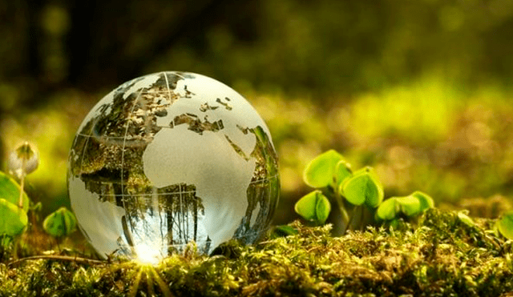
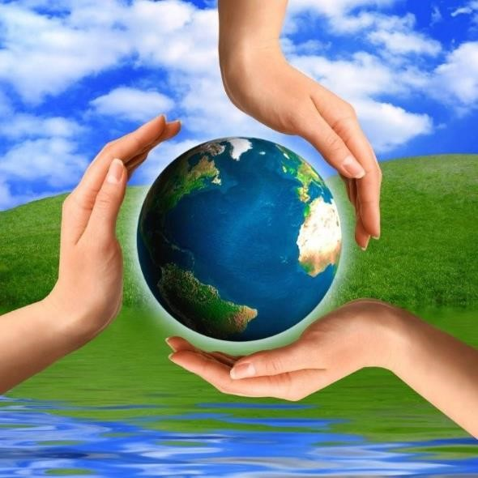

La contaminación ambiental es un problema global que afecta la calidad del aire, agua y suelo.
La contaminación ambiental es la presencia de sustancias o elementos dañinos para los seres humanos y los ecosistemas (seres vivos). Existen diferentes tipos de contaminación, pero básicamente se pueden dividir en: contaminación del aire, contaminación de suelos (tierra) y contaminación del agua.
2. Energías Renovables
Las energías renovables, como la solar y eólica, son esenciales para reducir el impacto ambiental.
Las energías renovables son un tipo de energías derivadas de fuentes naturales que llegan a reponerse más rápido de lo que pueden consumirse. Un ejemplo de estas fuentes son, por ejemplo, la luz solar y el viento; estas fuentes se renuevan continuamente.

3. Reciclaje y Reutilización
El reciclaje ayuda a reducir la cantidad de desechos y a preservar los recursos naturales.
Reciclar implica descomponer un producto en materias primas y luego utilizar las materias primas para crear nuevos productos. Reutilizar es reutilizar un activo existente para un nuevo uso, y eso es exactamente lo que hacen nuestras soluciones.

4. Conservación de Ecosistemas
La conservación de los ecosistemas es clave para proteger la biodiversidad y mantener el equilibrio natural.
Conversión: el cambio de un ecosistema natural a otro uso del suelo, o un cambio profundo en la composición, estructura o función de las especies del ecosistema natural. Estas definiciones son aplicables en todo el mundo y se pueden contextualizar a diferentes regiones y sistemas de producción de materias primas.